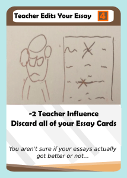
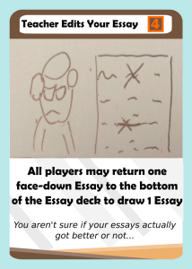
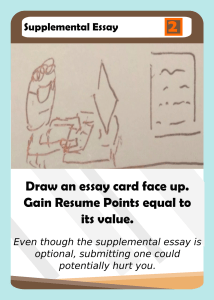
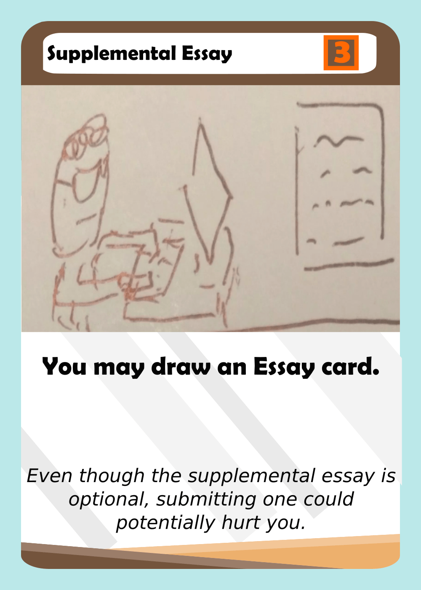
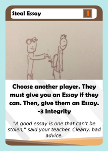
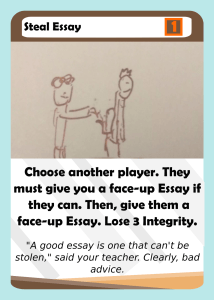
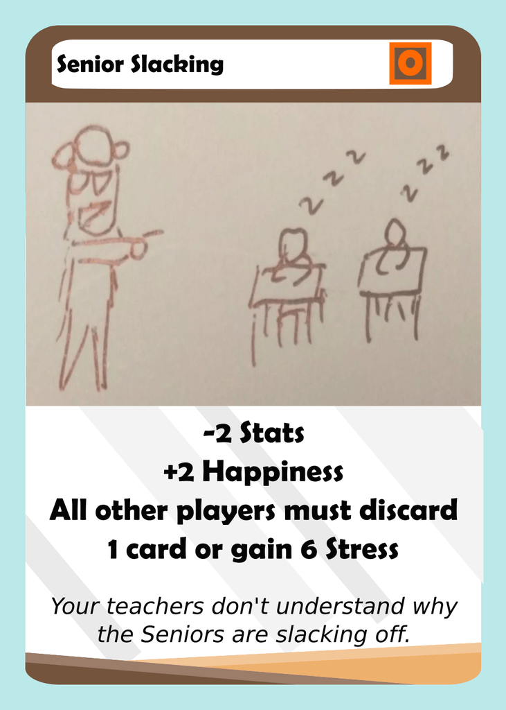
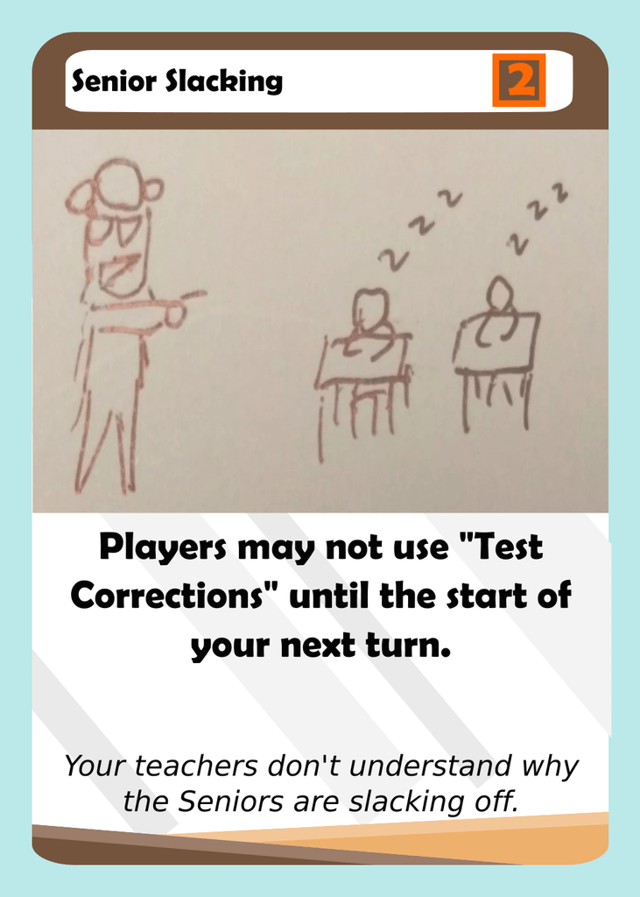

Personal website
July 31, 2018
Hey everyone! Finally, we are now going to take a look at the Senior deck.
Teacher Edits Your Essay
 This card is outdated, and so the new effect actually makes sense with the new Essay mechanic. The idea would be to allow players who haven’t been able to cycle their Essays the real way to be able to do so.
Supplemental Essay
 I think this card is less random and simpler by just allowing someone do draw an Essay.
Steal Essay
 This card had to be updated to only allow players to steal face-up Essays. This way, you could theoretically protect an Essay by not playing it face-up, and also reduces the luck aspect of the card.
Senior Slacking
 Cards like Senior Slacking weren’t very fun, because you don’t actually get to do anything with your turn. I still wanted some kind of negative effect for the players, so instead it locks down test corrections.
Other changes:
Initial thoughts on these changes are that the Senior deck may have been over-buffed. I think that there might be another update where some of the Senior cards are made worse. Anyway, let me know what you think in the comments below and make sure to subscribe if you like this content!